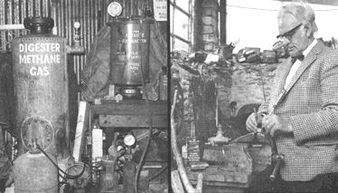

LEFT:Harold Bates pilot Manure Extractor and the Manure Digester that he uses for day-to-day generation of automobile and truck fuel. Note the high-pressure compressor with which Bate fills a storage bottle (lower left of photo) to a pressure of 1100 pounds per square inch. RIGHT: From this cluttered home workshop, Harold Bate challenged the multi-billon dollar petroleum industry and won!